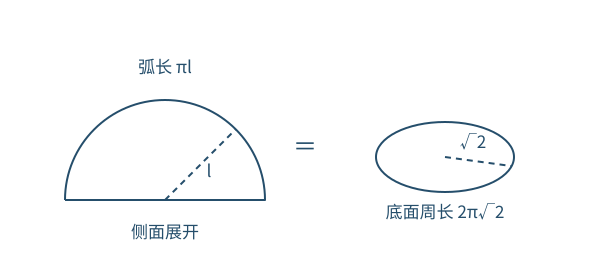
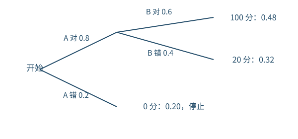
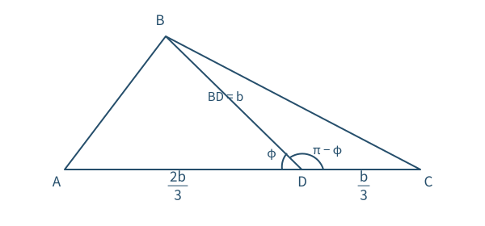
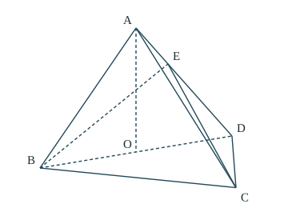
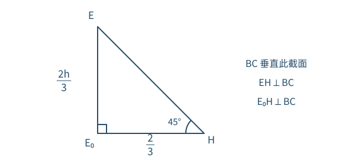

第 1 题 · 单项选择题 · 5 分
从有限集合中筛选元素
集合
题目
集合
，。求
。
已知与目标
是开区间中的实数集合，
只有四个元素。要找同时属于
和
的元素。
思路
交集不能增加
以外的元素，因此逐个检查
的四个数最直接。
解题步骤
满足
，保留。
满足
，保留。
不满足
；，二者都舍去。
将保留的数用列举法写出：。
检查
是开端点，不能选入。交集是两个数的集合，不是区间
。
第 2 题 · 单项选择题 · 5 分
看清共轭的位置
复数
题目
已知
，计算
。
所用高中知识
共轭复数；复数乘法；。
已知与目标
，所求是
。共轭符号只作用在括号中的
上。
思路
先取共轭，再合并括号内同类项，最后按乘法分配律计算，避免漏掉共轭或虚数平方的负号。
解题步骤
实部不变、虚部变号，故
。
所以
。
展开：。
用
，得到
。
检查
另一种核算：，，两项相加仍为
。
第 3 题 · 单项选择题 · 5 分
展开前后弧长不变
圆锥
题目
一个圆锥的底面半径为
，侧面展开后是半圆。求圆锥母线长。

半圆弧对应底面圆周，半圆半径就是母线。已知与目标
底面半径
，侧面展开为半圆，求母线长
。
思路
展开只改变侧面的形状，不改变它与底面相接的边界长度。半圆的弧对应原来的底面圆周，半圆半径对应母线。
解题步骤
半圆圆心角为
，其弧长为
。
底面圆周长为
。
将同一条边界的两种表达相等：。
两边除以正数
，得
。
检查
，符合非退化圆锥的几何关系。这里比较的是半圆弧长，不包括半圆的直径。
第 4 题 · 单项选择题 · 5 分
把相位平移带入单调区间
三角函数
题目
对
，下列哪个区间上函数单调递增？
所用高中知识
正弦函数的周期和单调区间；函数平移。
已知与目标
，判断哪个选项的整个区间上函数递增。
思路
正系数
不改变单调性。把
作为正弦函数的自变量，先写相位范围，再解出
的范围。
解题步骤
在
上递增，。
令
，两端都加
，得到递增区间
。
A 的
完全包含在
内，因此递增。
B 跨过极大值点
，D
跨过极小值点
，都不可能在整个区间递增；C
的整个区间位于递减段。
检查
不能仅用两端函数值比较来判断区间内的单调性；应确认整个区间处在同一递增段。
第 5 题 · 单项选择题 · 5 分
固定和中的乘积最大值
椭圆
题目
是椭圆
的两个焦点，
在椭圆上。求
的最大值。
已知与目标
椭圆长半轴为
，求两条焦半径的乘积最大值。
思路
椭圆上动点的坐标会变化，但两焦距之和固定。将几何最值化成“两个正数和固定时，乘积最大”的问题。
解题步骤
令
、，由椭圆定义有
。
由
得
，所以
。
等号要求
。取椭圆上顶点
或下顶点
，两焦距确实相等。
焦点坐标为
，这两个顶点到任一焦点的距离均为
，因此上界可取。
检查
给出
只是求出了上界；明确椭圆上有取等点，才能称
为最大值。
第 6 题 · 单项选择题 · 5 分
先识别完全平方
三角恒等式
题目
若
，求
。
所用高中知识
二倍角公式；同角三角函数基本关系；齐次式化正切。
已知与目标
，求一个由正弦、余弦构成的分式。
思路
分子中的
能拼成分母的平方。先约分，再把二次齐次式同除以
，就能直接使用已知正切值。
解题步骤
由
可知
，且
。所以
，允许约分。
。
原式化为
。
用
补出分母并同除以
：
检查
整个过程不需要确定
的象限；任意选取正弦、余弦的正负号反而容易出错。
第 7 题 · 单项选择题 · 5 分
把两条切线化成两个切点
导数与切线
题目
若从点
可以向曲线
作两条不同切线，应满足哪个条件？
所用高中知识
导数的几何意义；切线方程；导数与单调性；方程根数。
已知与目标
从
能作指数曲线的两条不同切线，判断
的必要关系。
思路
切点比直线本身更容易描述。设切点横坐标为
，把“切线经过
”变成关于
的方程，再看一条水平线何时有两个交点。
解题步骤
在
处，切线斜率为
，所以切线是
。
代入
，得
，其中
。
。因
，
在
时严格递增，在
时严格递减，最大值为
。
若有两个不同解
，它们不可能位于同一个严格单调区间，也不能有一个等于极大值点。因此
。由
得
，于是
；又两个解都不是极大值点，故
。
两个不同切点也对应不同斜率：指数函数严格递增，
就有
。因此这里的根数确实对应不同切线的条数。
检查
本题只要求从“两条切线”推出关系，以上必要性已足够。
时两个切点合为一个；
时递增分支
上没有解，均不能产生两条切线。这样无需引用无穷远处的极限公式。
第 8 题 · 单项选择题 · 5 分
用乘法公式检查独立性
概率
题目
有 6 个相同的球，分别标有数字
，从中有放回地随机取两次，每次取
1 个球。甲表示“第一次取出的球的数字是
”，乙表示“第二次取出的球的数字是
”，丙表示“两次取出的球的数字之和是
”，丁表示“两次取出的球的数字之和是
”。下列哪对事件相互独立？
所用高中知识
古典概型；有序样本点；相互独立事件的判据。
已知与目标
有放回地抽取两次，每次号码为
至
，判断四对事件哪对独立。
思路
独立不是“可以同时发生”，而是交事件概率等于两概率之积。先列每个事件的概率，再逐项比较。
解题步骤
以
表示第一次、第二次号码，共
个等可能结果。甲有
个结果，乙也有
个，因此各自概率为
。
丙对应
，故
。丁对应
及
，故
。
A：甲与丙的交为空，交概率
，而概率乘积为
，不独立。B：甲与丁只有
，交概率
，独立。
C：乙与丙只有
，交概率
，不等于
。D：和不能同时为
、，交概率
，但概率乘积非零，所以也不独立。
检查
顺序不能丢；“有放回”保证每一次仍有六种等可能结果。非零概率的两个互斥事件一定不独立。
第 9 题 · 多项选择题 · 5 分
整体平移保留离散程度
统计
题目
由样本
构造
，其中
。哪些统计量在两组样本中相同？
A. 样本平均数
B. 样本中位数
C. 样本标准差
D. 样本极差
所用高中知识
平均数、中位数、标准差、极差的定义。
已知与目标
每个样本数据统一加非零常数
，判断哪些统计量保持不变。
思路
平移会改变位置，却不会改变相对距离。对位置统计量直接求新值，对离散程度统计量比较差。
解题步骤
新平均数
。因
，A
错。
平移不改变排序。样本个数为奇数时，中间的数加
；个数为偶数时，中间两数的平均也加
。所以中位数变为原中位数加
，B
错。
每个离均差满足
。平方后求平均得到的方差不变，再取非负平方根，标准差也不变，C
对。
新极差为
，D
对。
检查
可以为负，以上等式仍成立；此处是统一相加，不是把数据乘以常数。
第 10 题 · 多项选择题 · 5 分
逐项算模长与数量积
向量与单位圆
题目
为原点，，，，。判断下列等式。
A. B. C. D. 所用高中知识
向量模与数量积的坐标计算；余弦的和角公式；反例。
已知与目标
已知三个点的三角坐标和
，逐项判断给定等式是否恒成立。
思路
模长先算平方，数量积直接乘对应坐标后相加。错误选项只需找到一组允许的角使等式不成立。
解题步骤
A：，，故两模相等。
B：；同理
。取
，两值为
，故不恒等。
C：左边为
。右边为
，同样等于
。
D：左边为
；右边为
。取
，两边为
，不恒等。
检查
的纵坐标是
，这个负号决定
C 中出现和角而不是差角。
第 11 题 · 多项选择题 · 5 分
距离范围与视角极值
直线与圆
题目
在圆
上，，。判断下列结论。
A.
到直线
的距离小于
C. 当
最小时， D. 当
最大时， 所用高中知识
点到直线距离；圆的切线；勾股定理；几何角度范围。
已知与目标
点
在给定圆上，分别判断它到直线的距离界及从
观察时角度最小时、最大时的切线长度。
思路
圆上点到一条不相交直线的距离介于“圆心距离减半径”与“圆心距离加半径”之间；从圆外点发出的射线扫过圆，其首末位置必与圆相切。
解题步骤
圆心记作
，半径为
。过
的直线为
。故
，整圆位于直线的一侧。
从圆心沿直线法向方向走半径长，可到达距离的两个端点，所以距离范围恰为
。由
，上端小于
，A
对；下端小于
，B
错。
，所以
为圆外点。圆上各点相对
的纵坐标不超过
、横坐标至少
；其方向角都在
内。又整圆在射线
的同一侧，因而
随射线方向连续变化，不会跨过平角。最小与最大位置是从
作出的两条切线。
设切点为
，则
。两条切线的长度均为
。C、D
均正确。
检查
角度极值来自射线与圆“刚好相遇”的边界，不是离
最近或最远的点。两条切线长相等，所以最小角和最大角对应同一个长度数值。
第 12 题 · 多项选择题 · 5 分
把动点写成两个坐标参数
空间向量
题目
正三棱柱
中
，动点
满足
，。
A. 当
时，
周长为定值 B. 当
时，三棱锥
体积为定值 C. 当
时，恰有一个
使
D. 当
时，恰有一个
使
平面
所用高中知识
空间直角坐标；向量数量积；线面平行与垂直；棱锥体积。
已知与目标
在矩形侧面
中，由
确定。要逐项检验“恒定”“恰有一个”等不同命题。
思路
把水平、竖直方向分别作为坐标轴，
的坐标就是参数。恒定性可以用两个不同位置反驳；垂直及唯一性则用数量积方程检验。
解题步骤
建系：，，从而
。
A：
时，
沿
运动。取
，有
，周长为
。取
中点，，周长为
，两者不同，故
A 错。
B：
时，。因
，且
不在平面
内，所以该直线平行于此平面；其上各点到平面的距离相同。以固定三角形
为底，体积等于“固定底面积乘固定高再除以
”，故
B 对。
C：
时，，，数量积为
。等于
的解是
或
，均在允许区间内，且向量都非零。因此有两个点，不是一个，C
错。
D：，，数量积为
。在
时，再计算
- 所以上式等于
当且仅当
。此时
不在
上：若
是
的倍数，第二坐标迫使倍数为
，但第三坐标分别为
，矛盾。两条相交直线
都垂直
，故线面垂直成立且点唯一，D
对。
检查
“恰有一个”需要同时检查解的个数、参数范围及平面是否由三点真正确定；不能只解出一个数就结束。
第 13 题 · 填空题 · 5 分
用偶函数定义反求参数
函数奇偶性
题目
若
是偶函数，求
。
所用高中知识
偶函数的定义；指数函数；必要性与充分性。
已知与目标
在实数范围内为偶函数，求参数
。
思路
偶性要求每一对
函数值相等。选一个非零自变量可以求出唯一可能值，再代回验证它确实使整个函数为偶函数。
解题步骤
偶函数必有
。
，。
因此
，即
，得到
。
代回后
，且定义域
关于原点对称，所以充分性也成立。
检查
只代入
会恒得
，无法求参；只求出候选值而不验证，也没有完成整个“为偶函数”的要求。
第 14 题 · 填空题 · 5 分
用焦点坐标串联垂直关系
抛物线
题目
为原点，（）焦点为
。
且
轴；
在
轴上且
。若
，求准线方程。
所用高中知识
抛物线的焦点与准线；直线垂直的斜率关系；距离公式。
已知与目标
，；
竖直，，
在横轴上且
。求准线。
思路
竖直条件先固定
的横坐标；抛物线方程给纵坐标；垂直条件再确定
，由横轴交点
求出
。
解题步骤
焦点
，准线是
。因
竖直，，代入曲线得
。
关于横轴对称的两个位置会给出同一个
，可先取
。此时
，故
。
方程为
。令
，解得
。
因
，，所以
，准线为
。
检查
若取
，两条斜率同时变号，仍得
。这说明没有遗漏下半平面的情况。
第 15 题 · 填空题 · 5 分
分段后再找全局最小值
绝对值与导数
题目
求
的最小值。
所用高中知识
对数定义域；绝对值分段；导数与函数最值。
已知与目标
在
中求
的全局最小值。
思路
绝对值在
改变表达式，必须先分段。分别求导后，把两段的单调性连起来，才能比较全定义域。
解题步骤
- 写成
在
上，，所以严格递减。
在
上，，在
为负，在
为正。
两个表达式在
都给出
，函数连续。因此
在整个
上递减，在
上递增；全局最小值在
取得。
。
答案
最小值为
，当且仅当
取到。
检查
分界点
处不必可导，但应检查左右值和单调性；两侧都在下降，所以它不是最小值点。
第 16 题 · 填空题 · 5 分
对折次数决定规格数
计数与数列求和
题目
某校学生研究民间剪纸艺术，发现剪纸时经常沿纸的某条对称轴对折。一张规格为
的长方形纸，对折 1 次可得
、
两种规格，它们的面积之和为
；对折
2 次可得
、、
三种规格，面积之和为
，以此类推。求对折
4 次后不同规格图形的种数；若对折
次，求
（单位为
）。
已知与目标
纸张面积为
。每次沿平行于边的对称轴对折，求四次后的规格种数及前
次各种规格面积总和。
思路
规格只取决于两个方向各折了几次，不取决于先后顺序。第
次后的每种面积相同，因此先计数，再求和。
解题步骤
若一个方向折
次，另一个方向折
次，则边长为
和
，其中
，共有
个候选规格。
不同
在不交换边长时显然给出不同规格；若交换边长能重合，就需
（某整数
）。但
不是
的整数次幂，因此没有重复。故四次后为
种。
每次对折面积减半，每一种第
次规格面积为
，所以
。
设
，列出错位的两行：
- 相减后相同幂次的系数差为
，但首项和末项单独保留：
- 所以
，再乘
得所求面积和。
答案
种；。
检查
代入
得
，代入
得
，与题设吻合。
时中间的求和为空和，仍适用。
第 17 题 · 解答题 · 10 分
隔一项观察，找到等差结构
分段递推数列
题目
数列满足
，且
（1）令
，求
和
通项；（2）求
。
所用高中知识
分段递推；等差数列通项与求和；分组求和。
已知与目标
数列每次增加
或
，由递推下标的奇偶决定。求偶数项数列及原数列前
项和。
思路
一步递推有两种情况，两步合起来却总增加
。先求偶数项，再借相邻关系求奇数项，最后两两配对。
解题步骤
顺次计算：，故
。
对任意
，下标
为偶数，；下标
为奇数，。相加得到
。
所以
为首项
、公差
的等差数列，。
由
，得
。每组和为
。
前
项正好分为十组，因此
答案
（1）；（2）前
项和为
。
检查
奇数项从
到
，十项和为
；偶数项从
到
，十项和为
，合计
。递推分类看的是
，不是
。
第 18 题 · 解答题 · 12 分
把比赛停止规则画成分支
离散型随机变量
题目
某学校组织“一带一路”知识竞赛，有 A、B
两类问题。每位同学先选择一类，并从中随机抽取一个问题回答；若答错则比赛结束，若答对则从另一类问题中再随机抽取一个问题回答，无论答对与否均结束。A
类每题答对得 20 分，B 类每题答对得 80 分，答错均得 0 分。小明答对 A、B
类问题的概率分别为
，且正确率与回答次序无关。
（1）若先回答 A 类问题，记累计得分为
，求
的分布列；（2）为使累计得分的期望最大，小明应先回答哪类问题？说明理由。

先答 A 的三条终止路径；首题错后不再作答。所用高中知识
离散型随机变量的分布列与数学期望；乘法公式；分类讨论。
已知与目标
首题错即停止，首题对才有第二题；A、B 正确率为
，分值为
。求先
A 的分布列并比较两种次序。
思路
这里把题设‘正确率与回答次序无关’理解为：实际到达某类题时，其答对的条件概率仍为该类给定概率；因此首题答对后，第二题的正确率不改变。这是下文相乘所用的条件概率，不能仅凭两道题各自的边际正确率作乘法。先按实际答题过程列出互不重复、没有遗漏的终止路径。不能直接把两题分数相加，因为有些人没有答第二题的机会。
解题步骤
先答 A：A 错的概率为
，比赛立即结束，总分为
。
A 对、B 错：总分为
，按题设正确率不随作答次序改变，路径概率为
。A
对、B 对：总分为
，概率为
。
因此分布列为：
由期望定义，。
先答 B 时，三条路径是“B 错”“B 对、A 错”“B 对、A 对”，总分
分别为
，概率分别为
。
。因
，先答
B 更好。
答案
（1）分布列如上；（2）应先答 B 类，最大期望为
分。
检查
两组分布概率分别加起来都等于
。先
A 时不可能只得
分，先 B 时不可能只得
分。期望最优不等于每次实际得分都较高。
第 19 题 · 解答题 · 12 分
用余弦定理消去分点角
解三角形
题目
中，
分别为角
的对边。已知
，
在边
上，且
。
（1）证明
；（2）若
，求
。

两小三角形共用 BD，D 处两角互补；示意图不按实际边长比例。所用高中知识
正弦定理；余弦定理；补角公式；三角形不等式。
已知与目标
，且
。先证
，再在
条件下求
。
思路
正弦定理能把角的正弦比变成边比。第二问有分点比例，适合分别在
、
中用余弦定理，利用两个角互补消去未知角。
解题步骤
三角形内角的正弦均为正，由正弦定理
。于是
，第一问得证。
且
，因此
。设
，则
。
在
中，余弦定理给出
- 在
中，，所以
将第二式乘
再加第一式，消去余弦：。因
，令
，得到
。
若
，则
，但
，违反三角形不等式，舍去。因此
。
回到原三角形，用余弦定理：
答案
（1）；（2）。
检查
选出的边比
满足三角形不等式，且结果在
内。整个推导只用了两次余弦定理，无需额外的分线段定理。
第 20 题 · 解答题 · 12 分
面面垂直先落到线面垂直
立体几何
题目
三棱锥
中，平面
平面
，且
，
为
中点。
（1）证明
；（2）若
是边长为
的等边三角形，，，二面角
，求体积。

题设空间关系示意；虚线表示被遮挡的线段或辅助线，长度以条件为准。
垂直公共棱 BC 的截面，把二面角化为直角三角形中的角。所用高中知识
等腰三角形性质；面面垂直性质；二面角的平面角；点线距离；棱锥体积。
已知与目标
，
为
中点，两平面
、
垂直。先证
，再由给定二面角求锥高与体积。
思路
先证明
垂直整个底面，它才可作为锥高。把
投影到底面，再作垂直
的截面，就把二面角变成一个直角三角形中的角。
解题步骤
在等腰三角形
中，中线
。两垂直平面的交线是
，
位于平面
内且垂直交线，因此
平面
。于是
，第一问得证。
设
。在底面内取
。因
是边长
的等边三角形，可取
；又
。
由
，点
从
向
走全长的
，所以
。它在底面的投影为
，竖直高度
。
底面内，直线
的方程为
。从
向
作垂线，垂足为
，于是
因
底面，；又
，故
平面
，从而
。
与
位于
同侧，故
正是二面角
的平面角。
在直角三角形
中，，得
。
，
到
的距离为
，所以
。因此
。
答案
（1）；（2）。
检查
表示
更靠近
，故其高度是
的
，不是
。二面角必须由垂直公共棱
的两条射线来表示。
第 21 题 · 解答题 · 12 分
先保留轨迹的右支限制
双曲线
题目
，，点
满足
，轨迹记为
。
（1）求
；（2）
在直线
上，两条不同直线经过
，分别与
交于
和
，且
。求两直线的斜率之和。
所用高中知识
双曲线定义；一元二次方程与韦达定理；直线参数化；两点距离。
已知与目标
两焦点为
，有符号的距离差为
。再利用过
的两条弦满足距离乘积相等，求斜率和。
思路
距离差为正决定只取右支。以
为起点写横坐标增量，两个交点的增量都为正，这样距离乘积可直接用韦达定理表示。
解题步骤
由双曲线定义，，故
。
到左焦点距离更大，位于右支，轨迹是
。
设
。竖直线
不与该右支相交，因此两条题设直线的斜率存在。任取其中一条，记斜率为
，令
。
代入
，展开得
若
，二次项消失，常数项非零，方程至多一个解，不能产生两个不同交点，所以
。记两个交点对应的根为
。右支条件给出
。
由韦达定理，。因分子恒正，得
。同时
、，因此
设另一条直线斜率为
，同理
。约去共同的正因子
，有
。
交叉相乘并约去共同项，得
，于是
。两条直线经过同一点且不同，故
，只能有
。
答案
（1），；（2）两直线斜率之和为
。
检查
只是本题两交点条件推出的必要条件，不能反过来声称所有这样的斜率都合适。例：取
、
和
，每条线都产生两个右支交点，说明题设配置可以实现。
第 22 题 · 解答题 · 12 分
用等值点证明倒数和的范围
导数与不等式
题目
设
。
（1）讨论
的单调性；（2）正数
满足
，证明
。
所用高中知识
对数运算；导数与单调性；辅助函数；严格不等式。
已知与目标
；不同正数
满足给定对数关系。先讨论
的单调性，再证明倒数和严格介于
与
之间。
思路
目标含倒数，先设
，条件就成为同一函数的两个等值点。下界用关于
的对称点比较；上界用比例
消元，再由两个一阶导数的符号证明。
解题步骤
定义域为
。，所以在
上严格递增，在
上严格递减，且
。
原等式除以
并整理为
。令
，便是
。不妨设
；由于每个单调区间内函数一一对应，两个不同等值点只能分居
两侧，所以
。又
，由右侧递减得
。
证明下界。对
，设
。，且当
时
故
。取
，得
。因
，
在该区间严格递减，所以
，即
。
证明上界。设
，把
代入
后除以
，得到
。整理为
要证
，因对数严格递增，只需证
。先证简单辅助不等式：对
，
满足
，故
。
，且当
时
- 因此
，即
。代回第
5 步，得
，于是
。与下界合并，再代回
即得结论。
答案
（1）
上递增，
上递减；（2）。
检查
保证
、，所以两边都是严格不等号。证明没有使用积分、凹凸性判据或未说明的端点极限；每次比较都落在已证明的严格单调区间内。
来源与版本说明
对照所提供的三组旧版资料（dot、histroy、dist）及原题扫描图逐题核对，保留题号、数学条件与选项，独立重写解析。旧版同一题的简略证明与新版本均经课程范围审核；本册不是考试机构发布的标准答案或官方授权出版物。
修订校阅日期：2026 年 10 月 4 日。HTML 与配套 PDF 使用同一份内容生成；公式为原生 MathML，图形为矢量示意。PDF 为 185 × 260 mm 阅读版，未生成原生 InDesign 工程，也不作印厂认证声明。正式出版仍需完成版权、编辑与印前终审。